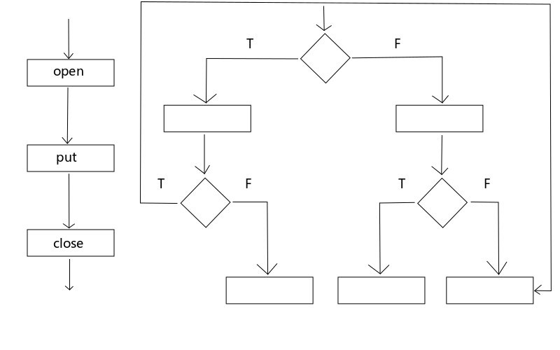
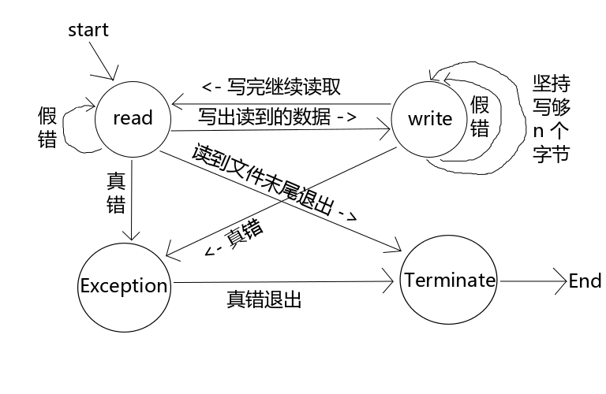

高级IO
非阻塞IO – 阻塞IO
补充： 有限状态机编程
- 非阻塞io
- io多路转接（文件描述符的监视）
- 其他读写函数
- 存储映射io
- 文件锁
1.1 非阻塞 I/O
非阻塞本身非常容易，对比阻塞来讲，就是不再死等。能做就做，不能做就退出。
高级 IO 部分有个很重要的概念是：非阻塞 I/O
在14章之前，我们讨论的所有函数都是阻塞的函数，例如 read(2) 函数读取设备时，设备中如果没有充足的数据，那么 read(2) 函数就会阻塞等待，直到有数据可读再返回。
当 IO 操作时出现了错误的时候，我们之前在讨论信号的博文中提到过会出现假错的情况。
那么从学了非阻塞 I/O 为止我们一共遇到了两种假错的情况：
EINTR：被信号打断，阻塞时会遇到。
EAGAIN：非阻塞形式操作失败。
遇到这两种假错的时候我们需要重新再操作一次，所以通常对假错的判断是放在循环中的。
例如 read(2) 函数使用非阻塞方式读取数据时，如果没有读取到数据，errno 为 EAGAIN，此时并不是说设备有问题或读取失败，只是表明采用的是非阻塞方式读取而已。
阻塞与非阻塞是使用的同一套函数，flags 特殊要求指定为 O_NONBLOCK 就可以了。
下面我们举个小栗子：（伪代码）
1 | fd = open("/etc/service", O_RDONLY | O_NONBLOCK); |
上面的小栗子， 首先在 open(2) 的时候使用特殊要求 O_NONBLOCK 指定以非阻塞形式打开文件。
当 read(2) 发生错误时要判断是否为假错，如果发生了假错就再试一次，如果是真错就做相应的异常处理。
1.2 数据中继
假设有正在打开的两个设备，两个设备之间进行数据交换。专业的叫法可以唤做 数据中继
rl-wr-rr-wl 读左写右读右写左；（单个进程，单个线程干活场景， 循环一圈的话，相当于四个工作）
那假设用阻塞来实现，会遇到什么问题呢？比如读左边的设备，但是设备上一直没有数据出现。如果用阻塞的机制，那么一定会卡在 读左的动作上， 假设右边不断有其他数据来源到来，那么先去读右再去写左，这个时候是一直没有做的。 结果你一直在读左，左边一直没有数据。就没有办法去读右写左了。所以可能导致右边的数据已经溢出了，但左边还一直是空着，而程序一直卡在左边的情况。如果是一个人或者一个任务（一个任务包括一个进程也好，一个线程也好）来干活。这个任务可以是一个线程去做，也可以是一个进程去做。总而言之，这个任务没有协同操作，就一个人来完成。
其实可以把任务拆分为两个任务，第一个任务来负责读左，并且写右。 第二个任务读右并且写左。这是两个进程在通信也好，两个线程也好。这种方式解决问题的几率就更大。那边有数据，那个分支就先走。
- 域名拦截
中介服务获取用户输入地址，中间插入广告页。而后拿真是请求去访问目标服务器，再返回给客户端。起到一个中介转发的服务。像这种拦截的服务都是中继模型的放大。
当同时有两万对设备在通信，作为一个server端可能会比较忙。fork子进程，每个子进程负责100对。当然要先确定自己能fork出来这么多子进程。考虑fork开销大，改成pthread，创建出来线程，每个线程负责若干对。
其实这种机制，包括前面写的很多程序.慢慢滚雪球，最终变为一个工程。比如上面这种机制就能发展成负载均衡。之所以做不出来，在于外围知识不够。比如负载均衡需要对集群的概念有了解，比如
之前讲的流控，可以联系到解码器是如何实现的。比如一个mp3文件的头部如何去读取。用c来监视web上面的一些内容，做这些是需要理解web服务器是如何相应的，是需要理解http1.0 http1.1的语法。这都是周边知识的确实。apue讲的是机制，进程，线程，信号包括后面的进程间通信。
1.3 有限状态机
1.3.1 复杂流程与简单流程
简单流程： 自然流程是结构化的
复杂流程： 自然流程不是结构化的
什么是自然流程： 作为人类来讲，解决问题最直观的思路
大家先考虑一个问题：把大象放到冰箱里需要几步？
1）打开冰箱门；
2）把大象放进去；
3）关闭冰箱门；
这就是解决这个问题的自然流程。

图1 简单流程与复杂流程
把一个问题的解决步骤（自然流程）摆出来发现是结构化的流程就是简单流程，如果不是结构化的流程就是复杂流程。所有的网络应用和需要与人交互的流程都是复杂流程。
结构化的流程就是作为人类的本能解决问题的思路。
在之前的博文中 LZ 提到过一个“口令随机校验”的策略大家还记得吗？就是要求用户必须连续两次输入正确的密码才认为校验通过。就算是这样小的模块也不会用一个单纯的顺序选择流程把它完成，它一定是一个非结构化的流程。
有限状态机就是程序设计的一种思路而已，大家刚开始接触觉得难以理解，那是因为还没有习惯这种设计思路。我们为什么觉得像原先那种流程化的程序设计思路好用？那是因为被虐惯了，你曾经被迫习惯用计算机的思路来考虑问题而不是用作为人解决问题的本能步骤来考虑问题。有限状态机就是让你以作为人的本能的解决问题的方式来解决问题，当你习惯了有限状态机的设计思想之后就不觉得这是什么难以理解的东西了。
有限状态机被设计出来的目的就是为了解决复杂流程的问题，所以更何况是简单流程的问题也一样能够轻松的解决。
作为程序猿最怕的是什么？
恐怕最怕的就是需求变更了吧。
为什么要使用有限状态机的设计思路呢？因为它能帮助我们从容的应对需求变更。
使用有限状态机编程的程序在面对需求变更的时候往往仅需要修改几条 case 语句就可以了，而没有使用有限状态机编程的程序面对需求变更往往要把大段的代码推倒重来。
所以如果你掌握了有限状态机的编程思想，那么在很多情况下都可以相对轻松的解决问题，而且程序具有较好强的健壮性。
说了这么多废话，有限状态机到底是什么呢？
使用有限状态机首先要把程序的需求分析出来（废话，用什么编程都得先分析需求），然后把程序中出现的各种状态抽象出来制作成一张状态机流程图，然后根据这个流程图把程序的框架搭建出来，接下来就是添枝加叶了。
下面我们通过一个栗子来说明有限状态机的设计思想。
假如有如下需求：从设备 tty11 读取输入并输出到 tty12 上，同样从 tyy12 读取输入并输出到 tty11 上。
首先我们把它的各种状态抽象出来画成一幅图。

图2 有限状态机
每个状态画成一个圆形节点，每个节点延伸出来有多少条线就表示有多少种可能性。
这些节点拿到我们的程序中就变成了一条条 case 语句，下面我们看看使用代码如何实现。
1 |
|
1 | ./relay |
大家先把这段代码读明白，下面我们还要用这段代码来修改示例。
如果只看上面的代码是很难理解程序是做什么的，因为都是一组一组的 case 语句，不容易理解。所以一般使用有限状态机开发的程序都会与图或相关的文档配套发行，看了图再结合代码就很容易看出来代码的目的了。
大家要对比着上面的图来看代码，这样思路就很清晰了。
使用状态机之前需要使两个待进行数据中继的文件描述符必须都是 O_NONBLOCK 的。
整个状态机中都没有使用循环来读写数据，因为状态机能确保每一种状态都是职责单一的，出现其它的任何状况的时候只要推动状态机问题就可以解决了。
所以这样的程序可维护性是不是高了很多？如果出现了需求变更，只需要简单的修改几条 case 语句就可以了，而不需要大段大段的修改代码了。
大家要多使用状态机的设计思想来写程序才能加深对这种设计思想的掌握程度。
1.3.2 中继引擎库
1 | // 见 relayer 文件夹 |
已完成中继引擎中的 rel_addjob 方法添加进去任务，并且使用状态机来管理当前非空任务的状态。只要当前这个任务是 STATE_RUNNING 态，那就推里面的两个状态机。当前就是一个server的状态，如果该程序达到最大的负载量, 比如 REL_JOBMAX达到上限，当前有10000对，20000个文件描述符在两秒做数据中继的话，那么看单机是否能承载，如果不能，采用集群，使下面的多个主机来帮助完成这个任务。即使没有多个主机，也能创建子进程或者线程，每个进程或者线程负责多少个状态机的推动。
该程序并不是一个重负载的程序，它最多算一个IO密集型的任务。一般IO密集的程序都不是负载重的程序，负载重，io又密集的话，这程序很难控制。
为什么说这个程序是io密集，它是获取内容然后进行传输。为什么不是重负载，是ftp传输快，还是手动打字快？肯定是FTP快，即使数量多，也是io密集型任务。（这句不是很懂，先留着，以后再理解）。
而io密集型任务，其实绝大多数都在空闲，这个程序的问题是，依然没有完成行为监视的部分，还是盲推。当启动程序时，cpu一下占满一个核，cpu使用率满栈。 没有内容的时候，也是在不停的推动试探。程序大多数时间盲在 EAGAIN。 比如现在初始状态是一个读态，如果没有内容的话，是没办法读的。现在的read返回的就是一个假错。然后在一个while循环中继续 碰到假错 推动到read，以此循环。对于一个io密集型的任务就可以使用io多路转接。如下
1.4 I/O 多路转接
I/O 多路转接， 说白了就是监视文件描述符的行为。 这个技术针对io密集型模型的解决方案。当当前文件描述符发生感兴趣的行为时，我才去做后续操作。这个感兴趣的行为可以有相关的机制去订阅。
上面那个 读tty11 写tty12，读tty12 写tty11 的栗子是采用忙等的方式实现的，I/O 多路转接这个小节讨论的就是怎么把上面那个栗子修改为非忙等的模式。
有些时候就是这样的，读取多个文件（一般是设备）的时候不能使用阻塞方式，因为一个阻塞了其它的就没法读了；而非阻塞方式如果采用忙等的形式又得不偿失，CPU满栈。你想想比如 telnet 服务在接收用户的命令的时候是不是这种情况呢？
对于处理这样的需求，Linux 系统为我们提供了 3 种方案：select(2)、poll(2) 和 epoll(7)，这些方案提供的函数可以同时监视多个文件描述符，当它们的状态没有变化时阻塞等待，当它们的状态发生变化时会给我们一个通知让我们继续处理任务，下面我们一个一个的介绍它们。
select poll epoll
共同点： 它们三个完成的任务是一致，就是io多路转接，实现文件描述符的监视。
区别
- select(2) 的优点是足够老，各个平台都支持它，这也是它相对于 poll(2) 唯一的优点。
劣势是本身接口设计的有缺陷，传参部位有问题。 - poll跟 select 在监视文件描述符的组织思路是完全不一致的；select是以事件为单位组织文件描述符，poll以文件描述符来组织事件。这两个函数的出发点和组织形式是不太一致的。poll也是可以移植的。
- 很多平台依然觉得poll的效率不够高，所以以poll为基础上，在各个平台上开发的方言。epoll就是linux系统在poll的基础上做的方言，来完成文件描述符的监视。实际上poll和epoll的思路非常贴近，组织形式也一样。只不过换成poll需要用户自己维护一些内容，epoll是企图简化用户维护的这块内容。把poll在用户角度能看到的一些内容进行了封装组成了epoll的机制，所以epoll是没办法移植的。select poll是可移植的，select太古老。poll均衡三者的比较之中是相对不错的。
1.4.1 select(2)
1 | // select, FD_CLR, FD_ISSET, FD_SET, FD_ZERO - synchronous I/O multiplexing |
select(2) 的优点是足够老，各个平台都支持它，这也是它相对于 poll(2) 唯一的优点。
劣势是本身接口设计的有缺陷，传参不稳定。
select(2)的缺陷，
- select函数布置监视任务的位置，也就是三个集合，分别为 readfds, writefds, exceptfds。但是它所监视结果所存在的位置也是这三个集合。举个例子，比如现在往 readfds放了10个文件描述符，writefds放10个，exceptfds放10个，要监视30个文件描述符不同的行为。这个时候，假如读集readfds有一个文件描述符可读了，那select函数一下就返回了。返回值为1.然后 readfds存放的就变成了可读的文件描述符了，而 writefds，exceptfds等两个集合则被清空了。监视现场和监视结果用的是一块内存空间，没有const修饰；
- 第一个参数nfds，当前监视文件描述符最大文件描述符再加1，在一个进程当中，能打开的文件描述符实际上是能够更改的。(ulimit -a)。nfds是int类型的，如果更改之后的打开文件描述符的大小理论上有超过有符号整型的大小风险。
- select监视的事件太单一，readfds， writefds，和 exceptfds 除了读和写 就是 异常。异常包含的层面就太多了，包括套接字相关的一些东西 全部都算是异常的结果。
返回值：
成功返回，文件描述符个数，现在发生你感兴趣行为的文件描述符个数。而这些发生感兴趣行为的文件描述符依然放在 读集， 写集， 以及异常集当中。
失败，返回值为-1，
参数列表：
nfds：当前监视文件描述符里面最大的文件描述符 + 1；
（比如当前监视的文件描述符是 3，5，7，9。那这里就写10）
readfds：需要监视的输入文件描述符集合， 读集；
writefds：需要监视的输出文件描述符集合， 写集；
exceptfds：需要监视的会发生异常的文件描述符集合， 异常集；
timeout：超时设置，等待的超时时间，如果时间超时依然没有文件描述符状态发生变化那么就返回。设置为 0 会立即返回。
设置为 NULL 则一直阻塞等待，不会超时，直到发生 注册事件才会返回结果。
还记得我们之前提到过使用 select(2) 函数替代 sleep(3) 函数吗？
我们看到参数中的文件描述符集合是 fd_set 类型的，那么怎么把我们的 int 类型的文件描述符添加到 fd_set 当中去呢？
下面我们重构上面的栗子，通过把它修改成非忙等的形式来看看 select 是如何使用的。代码没有太大的区别，所以只贴出有差异的部分。完整版看 relay_select.c
1 | enum |
在上面的栗子中，无论设备中是否有数据供我们读取我们都不停的推动状态机，所以导致出现了忙等的现象。
而在这个栗子中，我们在推状态机之前使用 select(2) 函数对文件描述符进行监视，如果文件描述状态没有发生变化就阻塞等待；而哪个状态机的文件描述符发生了变化就推动哪个状态机，这样就将查询法的实现改为通知法的实现了。是不是很简单呢？
1.4.2 poll
poll(2) 出现的时间没有 select(2) 那么悠久，所以在可移植性上来说没有 select(2) 函数那么好，但是绝大多数主流 *nix 平台都支持 poll(2) 函数，它比 select(2) 要优秀很多，下面我们来了解下它。
1 | // poll - wait for some event on a file descriptor |
参数列表：
fds：实际上是一个数组的首地址，因为 poll(2) 可以帮助我们监视多个文件描述符，而一个文件描述放到一个 struct pollfd 结构体中，多个文件描述符就需要一个数组来存储了。
nfds：fds 这个数组的长度。在参数列表中使用数组首地址 + 长度的做法还是比较常见的。
timeout：阻塞等待的超时时间。传入 -1 则始终阻塞，不超时。0 指非阻塞
结构体中的事件可以指定下面七种事件，同时监视多个事件可以使用按位或（|）添加：
| 事件 | 描述 |
|---|---|
| POLLIN | 文件描述符可读 |
| POLLPRI | 可以非阻塞的读高优先级的数据 |
| POLLOUT | 文件描述符可写 |
| POLLRDHUP | 流式套接字连接点关闭，或者关闭写半连接。 |
| POLLERR | 已出错 |
| POLLHUP | 已挂断（一般指设备） |
| POLLNVAL | 参数非法 |
表1 poll(2) 可以监视的 7 种事件
使用 poll(2) 的步骤也很简单：
1）首先通过 struct pollfd 结构体中的 events 成员布置监视任务；
2）然后使用 poll(2) 函数进行阻塞的监视；
3）当从 poll(2) 函数返回时就可以通过 struct polfd 结构体中的 revents 成员与上面的 7 个宏中被我们选出来监视的宏进行按位与（&）操作了，只要结果不为 1 就认为触发了该事件。
好了，这 3 步就是 poll(2) 函数的使用方法，简单吧。
下面我们修改一下上面的栗子，把上面用 select(2) 实现的部分修改为用 poll(2) 来实现。没有改过的地方就不贴出来了，其实也只有 relay() 函数被修改了。
1 | static void relay(int fd1,int fd2) |
1.4.3 epoll
epoll(7) 不是一个函数，它在 man 手册的第 7 章里，它是 Linux 为我们提供的“加强版 poll(2)”，既然是加强版，那么一定有超越 poll(2) 的地方，下面就聊一聊 epoll(7)。
在使用 poll(2) 的时候用户需要管理一个 struct pollfd 结构体或它的结构体数组，epoll(7) 则使内核为我们管理了这个结构体数组，我们只需要通过 epoll_create(2) 返回的标识引用这个结构体即可。
1.4.3.1 使用epoll的三个步骤
1 | // epoll_create - open an epoll file descriptor |
- 调用
epoll_create创建epoll实例
调用 epoll_create(2) 时最初 size 参数给传入多少，kernel 在建立数组的时候就是多少个元素。但是这种方式不好用，所以后来改进了，只要 size 随便传入一个正整数就可以了，内核不会再根据大家传入的 size 直接作为数组的长度了，因为内核是使用 hash 来管理要监视的文件描述符的。
返回值是 epfd，从这里也可以体现出 Linux 一切皆文件的设计思想。失败时返回 -1 并设置 errno。
得到了内核为我们管理的结构体数组标识之后，接下来就可以用 epoll_ctl(2) 函数布置监视任务了。
- 调用
epoll_ctl函数进行 epoll实例的设置
1 | // epoll_ctl - control interface for an epoll descriptor |
epoll_ctl(2) 的作用是要对 fd 增加或减少（op） 什么行为的监视（event）。成功返回0，失败返回 -1 并设置 errno。
op 参数可以使用下面三个宏来指定操作：
| 宏 | 描述 |
|---|---|
| EPOLL_CTL_ADD | 增加要监视的文件描述符 |
| EPOLL_CTL_MOD | 更改目标文件描述符的事件 |
| EPOLL_CTL_DEL | 删除要监视的文件描述符，event 参数会被忽略，可以传入 NULL。 |
表2 epoll_ctl(2) 函数 op 参数的选项
与 select(2) 和 poll(2) 一样， 布置完监视任务之后需要取监视结果，epoll(7) 策略使用 epoll_wait(2) 函数进行阻塞监视并返回监视结果。
- 使用
epoll_wait函数进行监视，并返回监视结果
1 | // epoll_wait - wait for an I/O event on an epoll file descriptor |
参数列表：
epfd：要操作的 epoll 实例；
events + maxevents：共同指定了一个结构体数组，数组的起始位置和长度。其实每次使用 epoll_ctl(2) 函数添加一个文件描述符时相当于向内核为我们管理的数组中添加了一个成员，所以当我们使用同一个 struct epoll_event 变量操作多个文件描述符时，只需传入该变量的地址和操作了多少个文件描述符即可，大家看看下面的栗子就明白了。
timeout：超时等待的时间，设置为 -1 则始终阻塞监视，不超时。0 非阻塞
跟上面的栗子一样，LZ 只贴出来被修改了的 relay() 函数，其它部分不变。
1 | // 完整代码看 io/adv/epoll/relay_epoll.c |
4.记录锁
记录锁就是用 fcntl(2) 函数创建一个锁文件，比较麻烦，感兴趣的童鞋可以自己看看书上的介绍，在这里 LZ 就不做介绍了，我们在最后会讨论两个方便的文件锁和锁文件。
5.异步 I/O
这部分主要是说信号驱动 IO，不是真正意义上的异步 IO。
异步 I/O 分为 System V 异步 I/O 和 BSD 异步 I/O，Linux 模仿的是后者，这里我们不过多讨论了，后面 LZ 在讨论内核的博文中会继续讨论异步。
1.5 其他读写函数
readv(2) 和 writev(2)
1 | // readv, writev - read or write data into multiple buffers |
这两个函数的作用就是对多个碎片的读写操作，将所有的小碎片写到文件中。
readv(2) 当没有连续的空间存储从 fd 读取或写入的数据时，将其存储在 iovcnt 个 iov 结构体中，writev(2) 的作用相同。iov 是结构体数组起始位置，iovcnt 是数组长度。
1.5.1 readn() 和 writen()
这两个函数可以从本书（《APUE》第三版）的光盘中找，它们并不是什么标准库的函数，也不是系统调用，只是本书作者自己封装的函数，算是方言中的方言，作用是坚持写够 n 个字节，之前我们在讨论 IO 的博文中实现过类似的效果。
对了，天朝在引入这本书的时候貌似没有引入配套光盘，需要的童鞋可以自己去网上搜索一下。
1.6 存储映射 I/O
把某一块内存，或者是说某一个文件的存储内容映射到当前进程空间里面来。你在当前进程空间中访问一段char型的内容就如同访问该块内存或者该文件一样。它能帮助我非常好用的共享内存，非常快的共享内存。
存储映射 I/O 是十四章的小重点。
在 *nix 系统中分配内存的方法有好几种，不一定非得使用 free(3) 函数。
通过 mmap(2) 和 unmap(2) 函数可以实现一个实时的类似于 malloc(3) 和 free(3) 函数的效果，我们在前面的博文中提到过，malloc(3) 和 free(3) 实际上是以打白条的形式实现的，就是在你调用函数的时候并没有立即分配内存给你，而是在你真正使用内存的时候才分配给你的。
存储映射I/O说的就是将一个文件的一部分或全部映射到内存中，用户拿到的就是这段内存的起始位置，访问这个文件就相当于访问一个大字符串一样。
1 | // mmap, munmap - map or unmap files or devices into memory |
mmap(2) 函数的作用是把 fd 这个文件从 offset 偏移位置开始把 length 字节个长度映射到 addr 这个内存位置上，如果 addr 参数传入 NULL 则由 kernel 帮我们选择一块空间并使用返回值返回这段内存的首地址。
prot 参数是操作权限，可以使用下表中的宏通过按位或（|）来组合指定
| 宏 | 含义 |
|---|---|
| PROT_READ | 映射区可读 |
| PROT_WRITE | 映射区可写 |
| PROT_EXEC | 映射区可执行 |
| PROT_NONE | 映射区不可访问 |
表3 mmap(2) 函数的 prot 参数可选项
映射区不可访问（PROT_NONE）的含义是如果我映射的内存中有一块已经有某些数据了，绝对不能让我的程序越界覆盖了，就可以把这段空间设置为映射区不可访问。
flags 参数是特殊要求，以下二者必选其一：
| 宏 | 含义 |
|---|---|
| MAP_SHARED | 对映射区进行存储操作相当于对原来的文件进行写入，会改变原来文件的内容。 |
| MAP_PRIVATE | 当对映射区域进行存储操作时会创建一个私有副本，所有后来再对映射区的操作都相当于操作这个副本，而不影响原来的文件。 |
表4 mmap(2) 函数的 flags 参数可选项
其它常用选项：
MAP_ANONYMOUS：不依赖于任何文件，映射出来的内存空间会被清 0，并且 fd 和 offset 参数会被忽略，通常我们在使用的时候会把 fd 设置为 -1。
用这个参数可以很容易的做出一个最简单最好用的在具有亲缘关系的进程之间的共享内存，比后面第15章我们要讨论的共享内存还好用。后面 LZ 会给出一个小栗子让大家看看这种方式如何使用。
mmap(2) 在成功的时候返回一个指针，会指向映射的内存区域的起始地址。失败时返回 MAP_FAILED 宏定义，其实是这样定义的：(void *) -1。
首先我们写一个栗子看看如何把一个文件映射到内存中访问。
1 |
|
这段代码会统计 /etc/services 文件中包含多少个字符 ‘a’。
mmap(2) 的返回值是 void* 类型的，这是一种百搭的类型，在映射了不同的东西的情况下我们可以使用不同的指针来接收，这样就能用不同的方式访问这段内存空间了。上面这个文件是文本文件，所以我们可以使用 char* 来接收它的返回值，这样就将整个文件看作是一个大字符串来访问了。
这个还是比较常规的用法，下面我们看一下如何使用 mmap(2) 函数制作一个好用的共享内存。
1 | // 父读子写 |
共享内存是进程间通信的一种手段，就是在内存中开辟一块空间让多个进程之间可以共同访问这段空间，从而实现进程之间的数据交换。在后面讨论 IPC 的博文中我们还会详细介绍共享内存，不过用 mmap(2) 制作的共享内存比后面介绍的共享内存使用起来更简便一些。
大家自己运行一下这段代码，可以看到父进程打印出了子进程写入的“Hello”字符串，说明这段内存确实是在父子进程之间共享的。
大家在使用的时候不要忘记父子进程最后都要做解除映射的动作。
从这个栗子中我们也可以看出来，这种共享内存的方式只适合在具有亲缘关系的进程之间使用，没有亲缘关系的进程是无法获得指向同一个映射内存空间的指针的。
1.7 文件锁
文件为何要锁，建立一个下载任务，首先建一个跟目标大小相似的空洞文件。然后分块去多线程并发。每个线程负责一块。可以当前写的这一块如何避免别人没有过来发生竞争。就需要把这块内容加锁。加锁之后写文件就没问题了。
fcntl()
flock()
lockf()
1.7.1 flock(2) 和 lockf(3) 函数
1 | // lockf - apply, test or remove a POSIX lock on an open file |
这两个函数可以实现好用的文件加锁。
我们这里只介绍 lockf(2) 函数，flock(2) 函数也差不多，都很简单，所以大家可以自己去查阅 man 手册。
lockf(3) 可以给文件进行局部加锁，简单来说就是从当前位置锁住 len 个字节。
参数列表：
fd：要加锁的文件描述符；
cmd：具体的命令见下表；
| 宏 | 说明 |
|---|---|
| F_LOCK | 为文件的一段加锁，如果已经被加锁就阻塞等待，如果两个锁要锁定的部分有交集就会被合并，文件关闭时或进程退出时会自动释放，不会被子进程继承。 |
| F_TLOCK | 与 F_LOCK 差不多，不过是尝试加锁，非阻塞。 |
| F_ULOCK | 解锁，如果是被合并的锁会分裂。 |
| F_TEST | 测试锁，如果文件中被测试的部分没有锁定或者是调用进程持有锁就返回 0；如果是其它进程持有锁就返回 -1，并且 errno 设置为 EAGAIN 或 EACCES。 |
图5 lockf(3) 函数的 cmd 参数可选值
len：要锁定的长度，如果为 0 表示文件有多长锁多长，从当前位置一直锁到文件结尾。
下面我们使用 lockf(3) 函数写一个栗子。
1 |
|
1 | // 博客版 |
还是用我么以前的栗子改的，大家还记得以前写过一个栗子，让 20 个进程同时向 1 个文件中累加数字吗。
在这里每个进程在读写文件之前先加锁，如果加不上就等待别人释放锁再加。如果加上了锁就读出文件中当前的值，+1 之后再写回到文件中。
获得锁之后 sleep(1) 是为了放大竞争，让进程之间一定要出现竞争的现象，便于我们分析调试。
在调试并发的程序时，如果有些问题很难复现，那么可以通过加长每一个并发单位的执行时间来强制它们出现竞争的情况，这样可以让我们更容易的分析问题。

图3 flock(2) 和 lockf(3) 的缺点
文件锁还有一个机制是把一个文件当作锁，比如要操作的是 /tmp/out 文件，那么父进程可以先创建一个 /tmp/lcok文件，然后再创建 20 个子进程同时对 /tmp/out 文件进行读写，但是子进程必须先锁定 /tmp/lock 文件才能操作 /tmp/out 文件，没抢到锁文件的需要等待其它进程解锁再抢锁，等父进程为所有的子进程收尸之后再关闭/tmp/lock，/tmp/lock 这个文件就被称为锁文件。
高级 IO 部分大概就这些内容了。